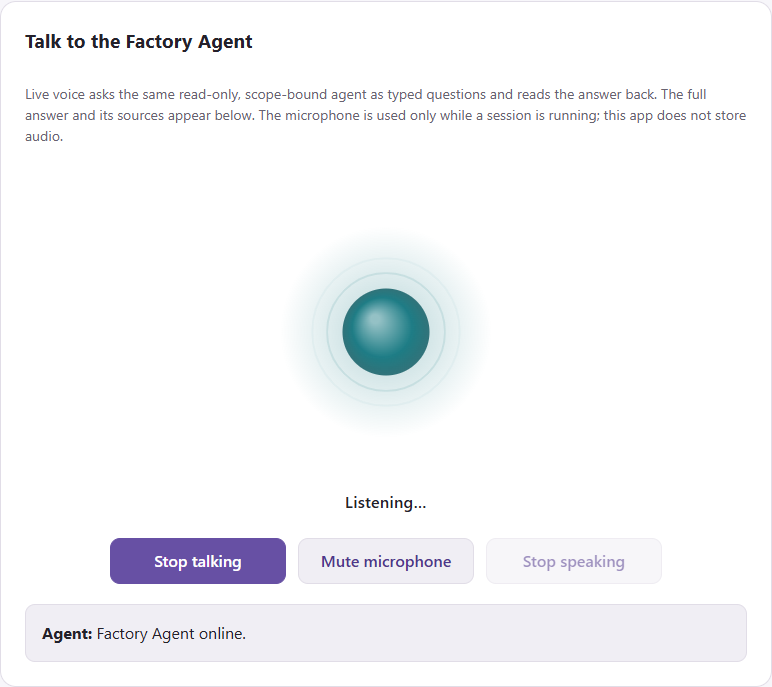
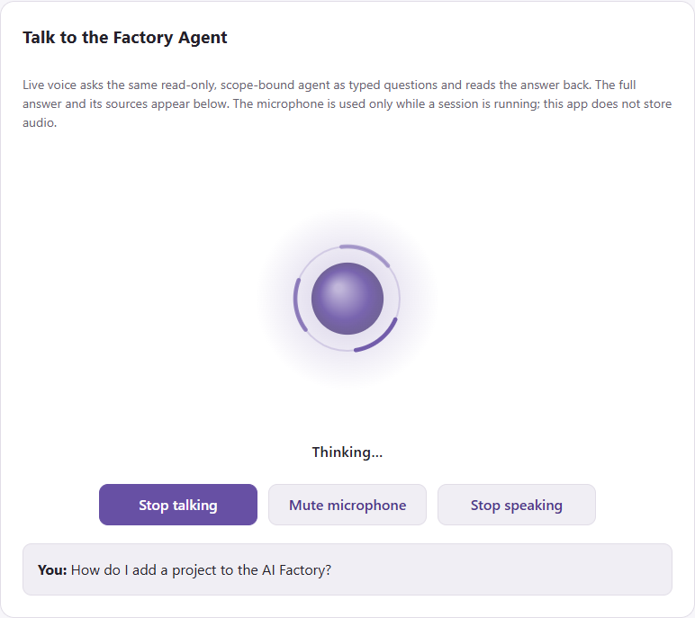
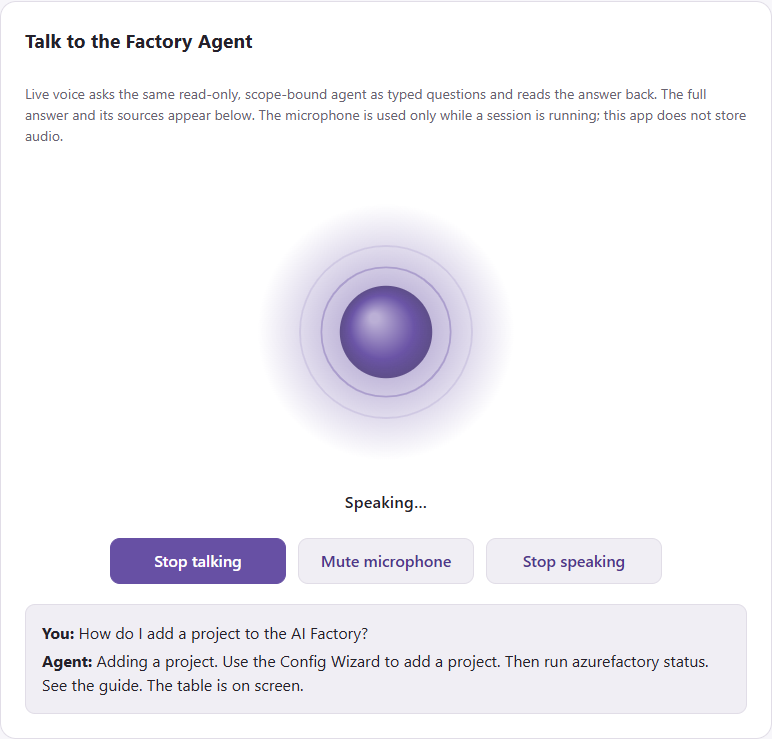

Quickstart: Create your first agent by enabling ESAF Agent Chat¶
In this quickstart, you switch on ESAF Agent Chat for a project and ask it a first question. ESAF Agent Chat is a Microsoft Foundry agent with a private web chat and live voice. It answers questions about your Factory from your own documentation and code.
Tip
Run it guided. The ESAF Tutorial Guide types the project calls for you and checks every step: open an ESAF tutorial and the track Scenarios 1-3. Download the ESAF Tutorial Guide. It's a private preview: ask Joakim Åström on LinkedIn for a preview code. The guide has no Agent Chat lab yet.
sequenceDiagram
participant You
participant API as Factory API
participant Run as Project pipeline
participant Chat as Agent Chat app
You->>API: upsert project with the four settings
API->>Run: start the project run
Run->>Chat: create the Foundry agent, then deploy the chat app
You->>Chat: sign in and ask a questionPrerequisites¶
- A project in Dev from Quickstart: Add a project for your team, or project 001 from Quickstart: Create your AI Factory. Any project number works. The examples use project 001 on scale set 001.
- On that project:
enableAIFoundry,enableAISearchandenableContainerAppsset to"true". - Private or hybrid networking, so that the project's Container Apps environment is internal. A Factory with public networking can't run Agent Chat. See hub and network modes.
- A chat model deployment that succeeded. The project setting
modelGPTXNamenames it. - A text-embedding deployment that succeeded, for example
text-embedding-3-large. - A Microsoft Entra admin who can create an app registration.
- The Entra object IDs of the people who may use the chat. They get read-only access.
- VPN or another route into the project's private network.
Important
The chat app deploys in Dev only. Runs for Stage and Prod skip it.
Create the sign-in registration¶
An Entra admin does this once per project. Pipelines never write to Microsoft Entra. The commands in this section are PowerShell. In Bash, end a continued line with a backslash instead of a backtick.
- Find the address your chat app gets. The app name is
aifactory-agent-project<NNN>-dev:
az containerapp env list --resource-group <project resource group> `
--query "[0].properties.defaultDomain" --output tsv
- Copy
config.example.jsoninusecase_code\40-agent-factory\40-aifactory-agentand put your own object ID underauth.grants. - From that folder, plan the registration. Add
--applywhen the plan looks right:
python -m aifactory_agent.browser_auth --config ./my-agent.json `
--redirect-uri "https://aifactory-agent-project001-dev.<default domain>/" `
--user-object-id "<your Entra object ID>"
- Copy
client_idfrom the output. You need it in the next step.
The tool gives sign-in access to you only. Ask your Entra admin to assign the other readers to the Enterprise Scale AI Factory Agent enterprise application. For the details, see authentication in the agent guide.
Turn on the four settings¶
Agent Chat is an update of your project, so it's scenario 3 with four settings. The call saves the settings and then deploys them.
| Setting | What it does |
|---|---|
enableFactoryChatAgent |
Creates the Foundry prompt agent enterprise-scale-ai-factory. |
enableAIFactoryAgentLiveVoice |
Deploys the chat web app with live voice. Needs enableFactoryChatAgent. |
aifactoryAgentEntraAppId |
Sets the client ID of the sign-in registration. |
aifactoryAgentReaderObjectIds |
Lists 1 to 20 object IDs, comma-separated, that get read-only access. |
More settings
| Setting | What it does |
|---|---|
aifactoryAgentContainerAppsEnvironment |
Names the internal environment. Empty picks the only one in the project resource group. |
aifactoryAgentModelDeployment |
Names the agent's own model deployment. Empty uses modelGPTXName. |
aifactoryAgentVoiceName |
Sets the voice. Empty uses en-US-Ava:DragonHDLatestNeural. |
aifactoryAgentVoiceLanguages |
Lists the input languages. Empty uses en-US; Swedish needs sv-SE,en-US. |
aifactoryAgentConfigFile |
Points to your own agent configuration file in your repository. It's merged over the generated one. |
- In the app, open the menu and select Configuration wizard > Quick setup & tear down.
- Select 3. Add or update project, and enter your project: Environment
dev, Project number001and Project scale set001. - In Optional settings JSON, enter the four settings, as in the
agent-chat.jsonfile on the CLI tabs. - Tick I approve this scenario: it runs at once and changes Azure., then select Run selected scenario.
The same settings are checkboxes and fields under AI Factory Agent chat & live voice, on the Simple Mode page and in the Configuration wizard.
@{
enableFactoryChatAgent = 'true'
enableAIFactoryAgentLiveVoice = 'true'
aifactoryAgentEntraAppId = '<client ID>'
aifactoryAgentReaderObjectIds = '<object ID 1>,<object ID 2>'
} | ConvertTo-Json | Set-Content .\agent-chat.json
azurefactory esaf upsert-project 001 dev --scale-set 001 --settings-json .\agent-chat.json --wait
cat > agent-chat.json <<'JSON'
{
"enableFactoryChatAgent": "true",
"enableAIFactoryAgentLiveVoice": "true",
"aifactoryAgentEntraAppId": "<client ID>",
"aifactoryAgentReaderObjectIds": "<object ID 1>,<object ID 2>"
}
JSON
azurefactory esaf upsert-project 001 dev --scale-set 001 --settings-json ./agent-chat.json --wait
from azurefactory import esaf
job = esaf.upsert_project("001", "dev", scale_set="001", settings={
"enableFactoryChatAgent": "true",
"enableAIFactoryAgentLiveVoice": "true",
"aifactoryAgentEntraAppId": "<client ID>",
"aifactoryAgentReaderObjectIds": "<object ID 1>,<object ID 2>",
})
print(job.wait()["status"])
In Bash, with API_URL, API_KEY and FOLDER set as in
Quickstart: Create your AI Factory:
jq -n --arg folder "$FOLDER" '{folder: $folder, approved: true, project: "001", environment: "dev",
scale_set: "001",
settings: {enableFactoryChatAgent: "true", enableAIFactoryAgentLiveVoice: "true",
aifactoryAgentEntraAppId: "<client ID>", aifactoryAgentReaderObjectIds: "<object ID 1>,<object ID 2>"}}' |
curl --silent --show-error --fail-with-body -X POST "$API_URL/api/v1/esaf/upsert-project" \
--header "X-API-Key: $API_KEY" --header 'Content-Type: application/json' --data @-
Allow about an hour for the first run: the project run, plus about 30 minutes to build the knowledge index. Later runs are faster.
You can also deploy only the agent from a terminal, without a full project run. From your consumer
repository root, ./GHA-azurefactory.sh add-aifactory-agent-chat --to-project 001 shows the plan, and
--apply deploys. ADO-azurefactory.sh takes the same options.
Connect to the private network¶
The chat app is internal, so you reach it through your Factory's VPN gateway. You sign in to the VPN with Microsoft. Do this once per computer and Factory.
- Install Azure VPN Client:
winget install --id 9NP355QT2SQB --source msstore --accept-package-agreements --accept-source-agreements
- Download your Factory's VPN profile. The gateway is in the common resource group:
$sub = '<your Dev subscription ID>'; $rg = '<common resource group>'
$gateway = az network vnet-gateway list --subscription $sub --resource-group $rg --query "[0].name" --output tsv
$url = az network vnet-gateway vpn-client generate --subscription $sub --resource-group $rg --name $gateway `
--processor-architecture Amd64 --output tsv
Invoke-WebRequest $url -OutFile "$HOME\Downloads\esaf-vpn-profile.zip"
Expand-Archive "$HOME\Downloads\esaf-vpn-profile.zip" "$HOME\Downloads\esaf-vpn-profile" -Force
The profile is esaf-vpn-profile\AzureVPN\azurevpnconfig.xml in your Downloads folder. It stays out of
your Factory repository.
- Open Azure VPN Client, select + > Import, open
azurevpnconfig.xml, and select Save. - Select Connect and sign in with Microsoft. First disconnect any other VPN that uses the same client address range.
The profile sets your Factory's DNS resolver, so the chat address resolves to its private IP.
Ask your first question¶
- Connect your VPN, as in Connect to the private network.
- Get the chat address:
az containerapp show --name aifactory-agent-project001-dev --resource-group <project resource group> `
--query properties.configuration.ingress.fqdn --output tsv
- Open
https://<that address>/in Edge, Chrome, Safari or Firefox, and sign in with Microsoft. - Ask: "What is the health of my AI Factory, and which skills can I use?"
You get a written answer with source citations. To talk instead, select Start talking and allow the microphone.
Verify the result¶
The job ends with status succeeded, and the orb in the chat shows what the agent is doing:
| Listening | Thinking | Speaking |
|---|---|---|
 |
 |
 |
If something goes wrong:
| Symptom | Fix |
|---|---|
| The run fails on the live voice step | Check the prerequisites: the agent, both model deployments and an internal Container Apps environment must exist. |
| Voice is on but the chat agent isn't | Set enableFactoryChatAgent to "true" too. Voice alone fails with a clear message. |
| A reader can't sign in | Assign that person to the enterprise application in Microsoft Entra. |
| Voice is unavailable | Select Use typed chat. Typing still works. |
For more, see troubleshooting in guide 21.
Clean up resources¶
Set both switches to "false" and run the same call again. Later runs then skip Agent Chat. This doesn't
delete anything: the app, the index and the role assignments stay.
To remove them, follow teardown in the agent guide, or delete the whole project with Quickstart: Clean up.
Next step¶
Back: Quickstart: Add a project for your team
Next: Quickstart: Clean up
Related:
- Guide 21: Agent Factory chat and live voice: security, operations and limits.
- ESAIF Chat Agent: how the agent, the MCP and the knowledge graphs relate.
- Run your first agent in your ESAF project: the project team builds its own agent.